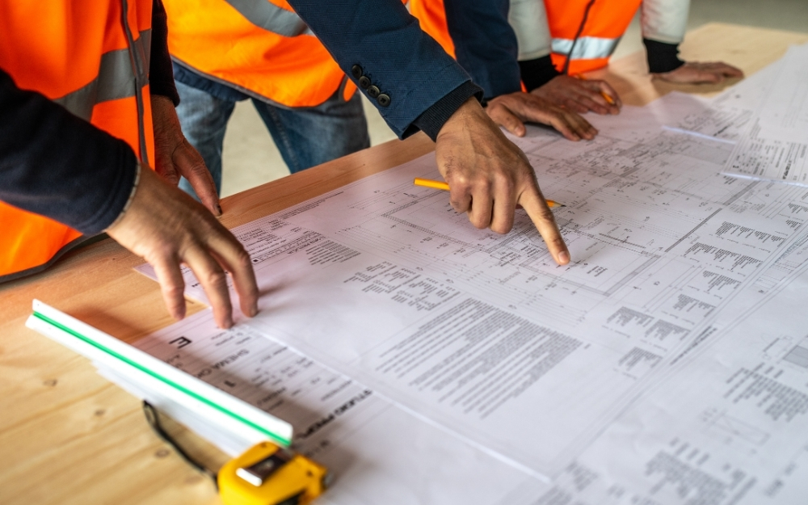
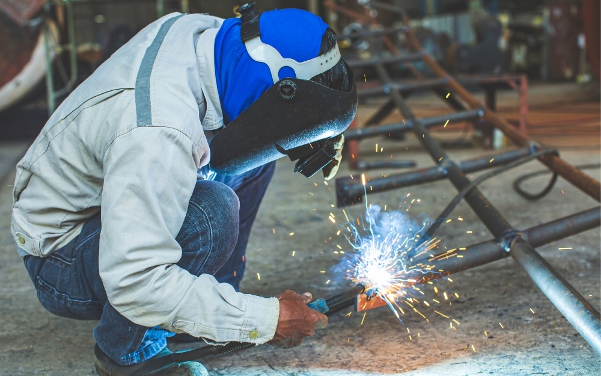
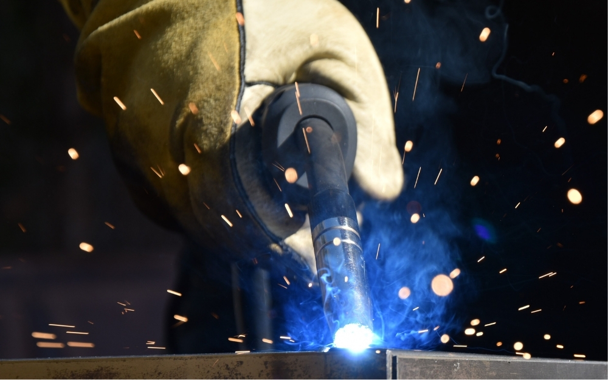
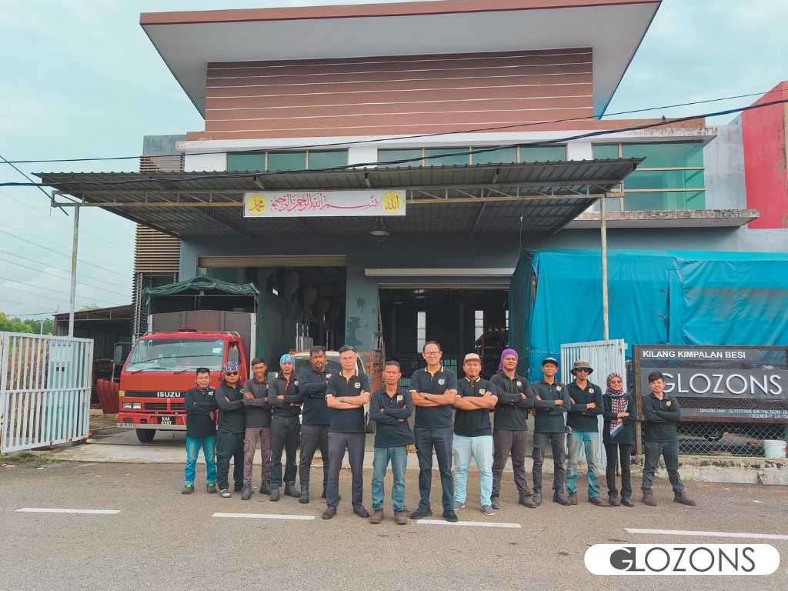
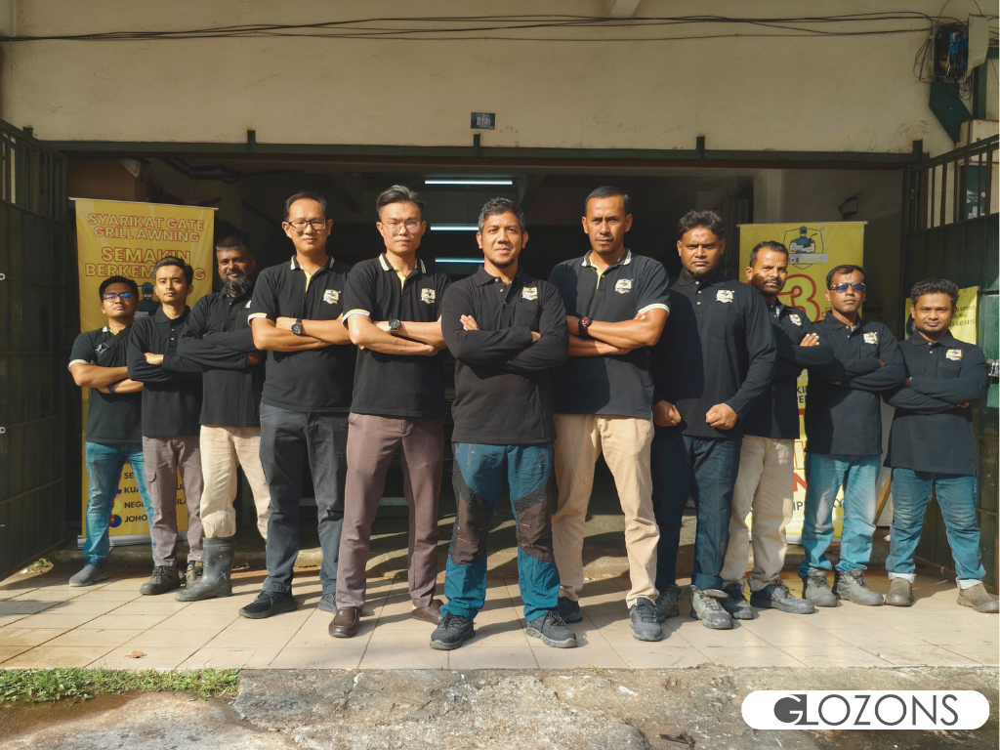
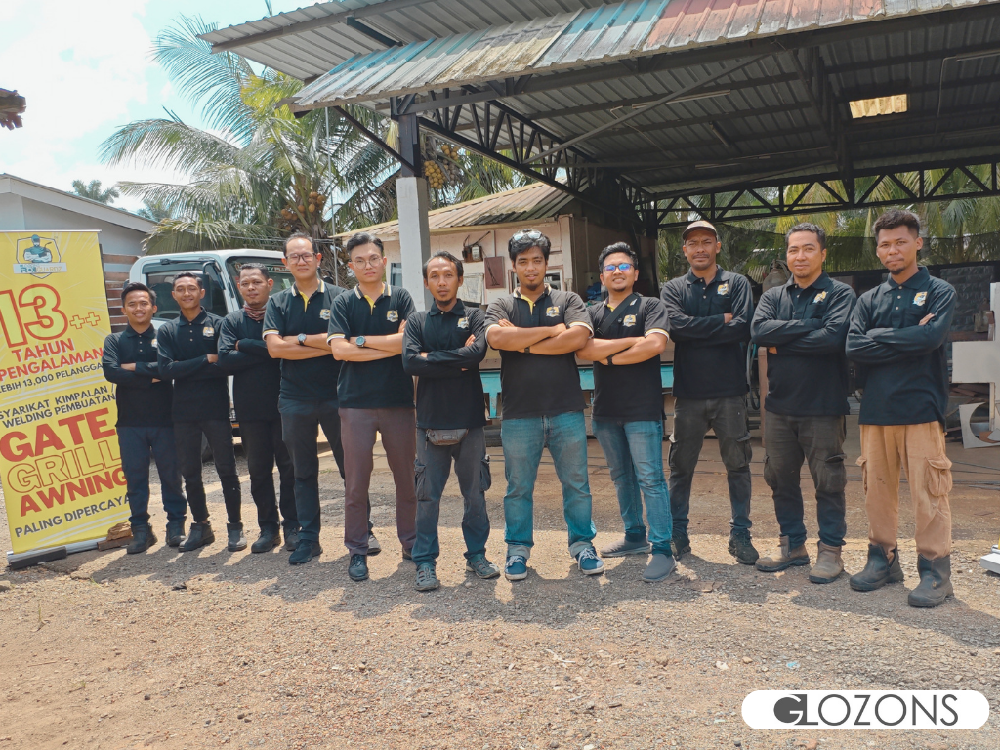
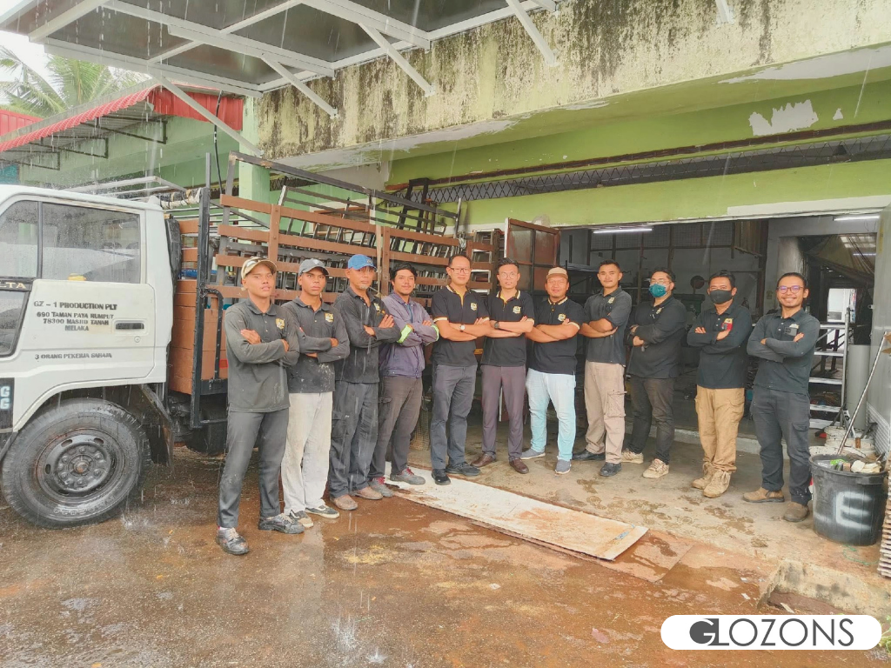
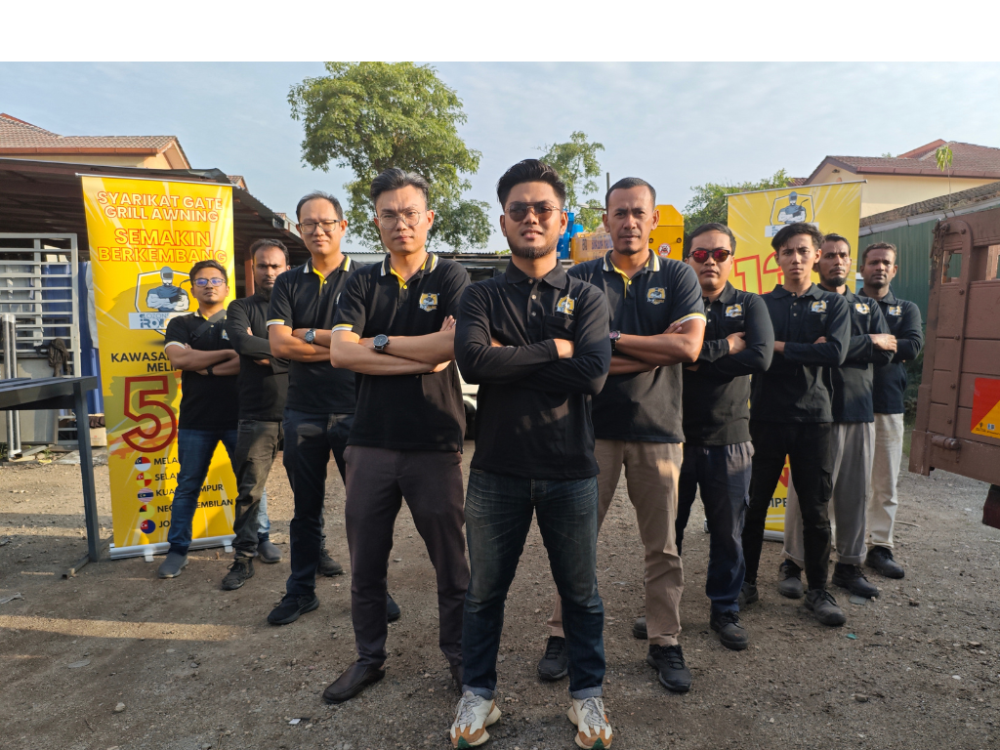

Bina Bengkel Besi Yang
Boleh Berkembang
Tanpa Bergantung Pada Anda
Kami membantu pemilik bengkel besi membina sistem pemasaran, jualan dan operasi yang lebih teratur dan menguntungkan. Berdasarkan pengalaman sebenar kami membangunkan Kilang Besi Ironguardz
Perbezaan Bengkel Besi Biasa & Bengkel Besi Bersistem Glozons
Ramai pemilik bengkel bekerja siang malam tetapi perniagaan masih sukar berkembang. Masalahnya bukan pada mesin atau pekerja, tetapi pada sistem pengurusan yang digunakan.
Model Tradisional "Bengkel Bergantung Pada Owner"
Sangat tidak stabil, sukar untuk berkembang besar
- Terlalu Bergantung Pada Pekerja Mahir: Jika pekerja mahir berhenti, operasi & kualiti kerja terhenti. Pemilik seolah-olah terikat dengan pekerja.
- Harga Ditentukan Berdasarkan Gerak Hati: Harga diberi berdasarkan pengalaman dan anggaran semata-mata. Kesilapan kecil boleh menyebabkan kerugian tanpa disedari.
- Kewangan Tidak Teratur: Sekadar menyemak baki bank setiap hari. Jualan masuk setiap hari, tetapi tidak tahu produk mana untung, bahagian mana membazir dan di mana wang syarikat bocor.
- Sukar Mengembangkan Perniagaan: Semua keputusan masih bergantung pada pemilik. Apabila pemilik tiada, operasi menjadi perlahan dan sukar dikembangkan.
Model Bersistem Glozons
Sistem yang membolehkan bengkel berjalan dengan lebih teratur walaupun tanpa pemilik sentiasa berada di bengkel.
- SOP Kerja Yang Jelas: Ilmu kerja tidak lagi hanya berada dalam kepala pekerja mahir. Semuanya direkodkan dalam SOP supaya kualiti kerja kekal konsisten walaupun pekerja bertukar.
- Sistem Sebut Harga Yang Menguntungkan: Setiap sebut harga dikira menggunakan formula yang sama supaya keuntungan lebih konsisten dan tidak bergantung kepada anggaran atau gerak hati. Memastikan margin keuntungan kasar melebihi 25%.
- Sistem Mengesan Pembaziran Harian: Prestasi setiap bahagian dipantau setiap hari dengan menggunakan sistem mudah dan kos rendah supaya pembaziran bahan mentah, masa dan kos dapat dikesan serta diperbaiki dengan cepat.
- Model Perniagaan Mudah Dikembangkan: Sistem yang standard membolehkan operasi dijalankan dengan cara yang sama di setiap cawangan, walaupun pemilik tidak berada di bengkel.
Empat Strategi Utama Kami untuk Membantu Bengkel Besi
Semua sistem yang kami ajar berasal daripada pengalaman sebenar mengurus bengkel besi. Praktikal, mudah digunakan dan terus boleh diaplikasikan dalam operasi harian. Sistem ini berpotensi meningkatkan hasil jualan.
Sistem Jualan, Sebut Harga & Rundingan
Ramai pemilik bengkel besi bimbang menerima tempahan berskala besar kerana takut tersalah kira kos and keuntungan. Kami membantu membina sistem sebut harga yang standard supaya setiap harga dikira berdasarkan formula yang jelas, bukannya anggaran atau gerak hati. Ini membantu memastikan keuntungan lebih konsisten, mengelakkan persaingan harga murah yang merugikan, serta meningkatkan keyakinan ketika berunding dengan pelanggan. Pada masa yang sama, kami mengajar teknik jualan yang membantu menukar lebih ramai prospek berkualiti kepada pelanggan.


Sistem Pengurusan Kakitangan
Ramai pemilik bengkel bimbang apabila pekerja mahir bercuti atau berhenti. Ini kerana operasi boleh terganggu dan kualiti kerja menurun. Kami membantu membina SOP kerja yang jelas serta sistem latihan yang tersusun supaya pekerja baharu dapat belajar dengan lebih cepat. Ilmu dan kemahiran tidak lagi bergantung kepada individu tertentu, sebaliknya menjadi aset syarikat yang boleh diwarisi kepada setiap pekerja. Hasilnya, operasi bengkel kekal lancar walaupun tanpa kehadiran pekerja utama atau pemilik.
Sistem Pengurusan Kejuruteraan & Kewangan
Ramai pemilik bengkel hanya melihat baki wang di bank, tetapi tidak tahu bahagian mana yang menguntungkan atau menyebabkan kerugian. Kami membantu membina sistem yang memantau kos bahan, kos pekerja, pembaziran dan keuntungan bagi setiap projek. Dengan data yang tepat, anda boleh mengenal pasti ketirisan lebih awal, mengawal kos operasi dan membuat keputusan berdasarkan angka sebenar, bukan sekadar andaian.

Sistem Mengembangkan Perniagaan
Ramai pemilik bengkel mahu mengembangkan perniagaan, tetapi bimbang kualiti kerja merosot apabila membuka cawangan baharu. Kami membantu membina sistem yang standard supaya setiap cawangan beroperasi dengan cara yang sama, menghasilkan kualiti kerja yang konsisten serta mengekalkan keuntungan. Dengan sistem yang tersusun, perniagaan lebih mudah berkembang tanpa bergantung sepenuhnya kepada pemilik.
Kalkulator Sasaran Jualan & Keuntungan
Tahukah anda? Ramai pemilik bengkel tidak tahu berapa jumlah jualan sebenar yang perlu dicapai setiap bulan untuk benar-benar memperoleh keuntungan. Gunakan kalkulator ini untuk mengetahuinya dalam masa kurang daripada 1 minit.
Masukkan jumlah keseluruhan kakitangan yang terlibat dalam operasi harian, termasuk pekerja teknikal, pemasang dan kakitangan sokongan.
Masukkan jumlah pendapatan bulanan yang anda ingin nikmati daripada keuntungan perniagaan. Nilai ini akan digunakan untuk menganggarkan sasaran jualan yang perlu dicapai.
Laporan Lengkap Glozons Kepada Anda: Anggaran Sasaran Jualan Minimum
Untuk mencapai sasaran jualan ini dengan keuntungan yang sihat, anda memerlukan sistem sebut harga yang tepat, kawalan kos yang berkesan dan operasi yang lebih sistematik. Tanpa sistem yang betul, jualan yang tinggi belum tentu menghasilkan keuntungan yang tinggi.
Adakah jumlah jualan semasa bengkel anda sudah mencukupi untuk mencapai sasaran ini? Jika belum, kami boleh membantu anda membina sistem untuk mencapainya.
Menggenggam Kejayaan: Glozons & Rakan Niaga Kilang Pembuatan Besi
Setiap bengkel besi yang berjaya mempunyai sistem yang tersusun. Sebab itu kami bukan sekadar memberi konsultasi, malah turun sendiri ke bengkel untuk membantu membina dan melaksanakan sistem bersama pasukan anda sehingga ia benar-benar digunakan.
Berjaya diselaraskan dan beroperasi di pelbagai negeri
Menghapuskan pembaziran bahan mentah yang tidak disedari
Sistem baharu yang memaksimumkan kecekapan pengeluaran





Kilang Melaka